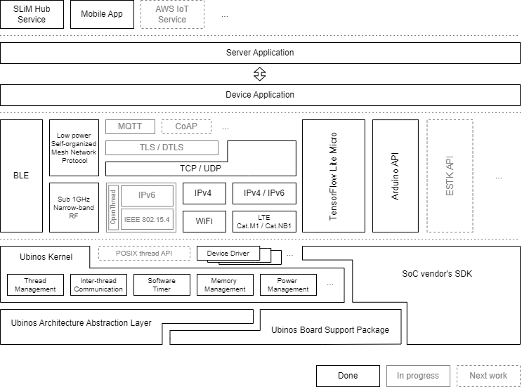
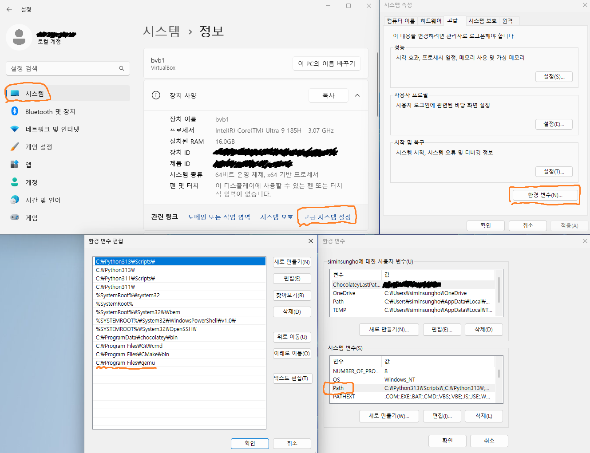
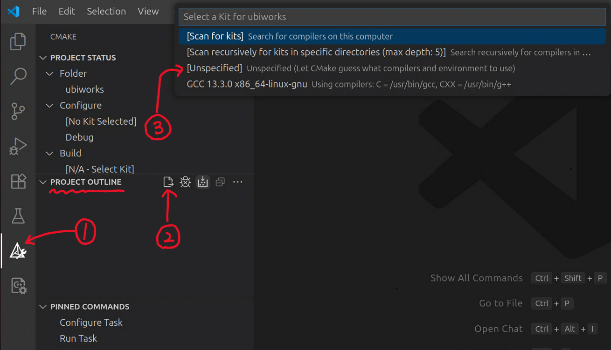
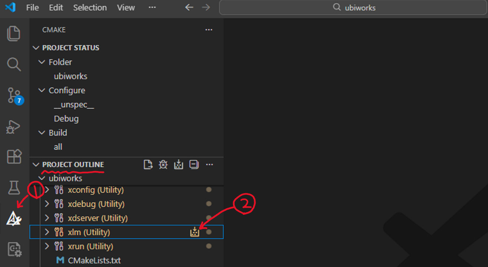
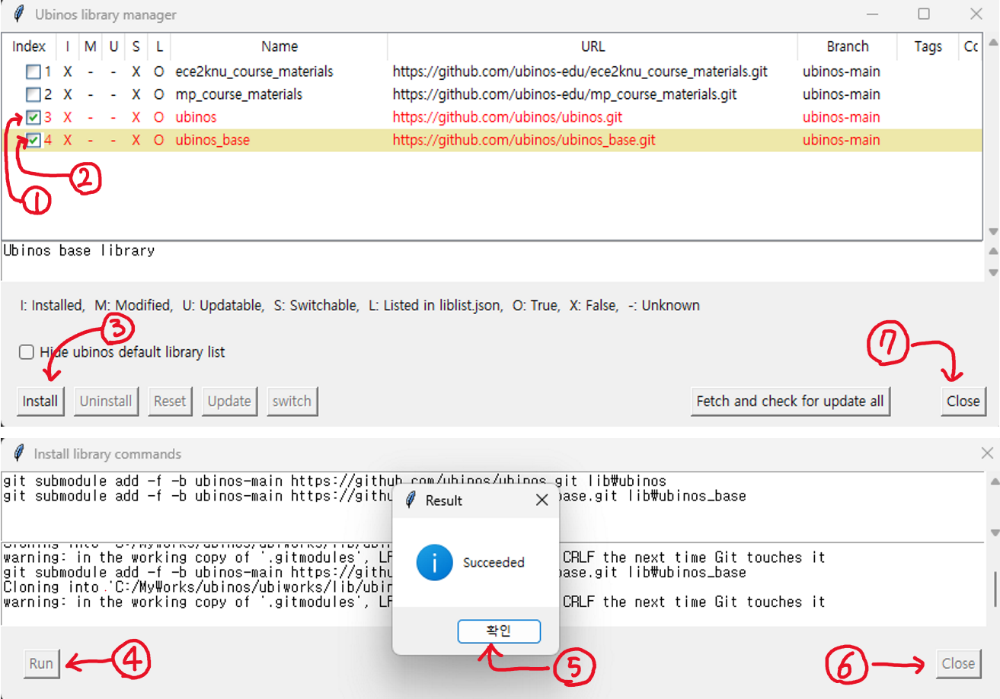

TR-RX007-RTOS¶
유비노스 소개¶
유비노스란?¶
유비노스는 실시간 시스템 개발에 필요한 다양한 기능들을 충실히 지원하면서, 동시에 매우 제한적인 자원만을 가지는 유비쿼터스 컴퓨팅 네트워크(사물인터넷)의 단말 장치 개발에도 활용한 수 있는 RTOS를 목표로 개발되었다.
이 목표를 이루기 위해 다음과 같은 기능 및 특징을 가지도록 설계 및 구현되었다:
- 실시간 시스템을 위한 기능 및 특징
- 멀티태스킹
우선순위 기반 선점형 라운드 로빈 스케쥴링 기능
우선순위 역전 현상 방지를 위한 우선 순위 상속 기능
- 다양한 태스크간 통신 기능
세마포어, 뮤텍스, 메시지큐, 조건변수
다중 태스크간 통신 객체(세마포어, 뮤텍스, …) 동시 대기 기능
- 제한적 자원만을 가지는 초소형 초저전력 단말 장치를 위한 기능 및 특징
- 전력 소비량 최적화 기능
틱 없는 유휴 상태 기능
RAM 전력 소비량 자동 최적화 기능
작은 램 및 롬 메모리 사용량
Figure 1 은 유비노스 구조를 보여준다.
{kind=link}

Figure 1 Ubinos architecture¶
관련 자료¶
유비노스 시작 안내서 (윈도우즈)¶
- 유비노스 관련 문의 및 답변:
유비노스 깃허브 이슈 웹페이지: (https://github.com/ubinos/ubinos.issues)
운영체제 종속적 패키지 설치¶
Chocolatey 설치¶
관리자 권한으로 PowerShell 실행
- 다음 명령어 실행
Set-ExecutionPolicy Bypass -Scope Process -Force; [System.Net.ServicePointManager]::SecurityProtocol = [System.Net.ServicePointManager]::SecurityProtocol -bor 3072; iex ((New-Object System.Net.WebClient).DownloadString('https://community.chocolatey.org/install.ps1'))
PowerShell 창 닫기
필요한 패키지 설치¶
관리자 권한으로 명령 프롬프트(cmd.exe) 실행
- 다음 명령어 실행해 필요한 패키지 설치
choco feature enable -n allowGlobalConfirmationchoco install ninja make gperf git dtc-msys2 wget 7zip cmake python3 python311 nodejs-lts qemu
명령 프롬프트(cmd.exe) 창 닫기
- 시스템 변수의 PATH에 다음 경로를 추가한다.
- 시스템 변수의 PATH 설정 메뉴
윈도우 설정 -> 시스템 -> 정보 -> 고급 시스템 설정 -> 환경 변수 -> 시스템 변수 -> Path
- 추가할 경로
C:\Program Files\qemu
Figure 2 은 경로 설정 예를 보여준다.
일반 사용자 권한으로 명령 프롬프트(cmd.exe) 실행
- 다음 명령을 수행해 git 사용자 이름과 이메일 설정
Note
“Your Name”과 “your-email@example.com”을 본인의 이름과 이메일로 변경해서 실행해야 한다.
git config --global user.name "Your Name" git config --global user.email "your-email@example.com"
명령 프롬프트(cmd.exe) 창 닫기
{kind=link}

Figure 2 Ubinos Env. Path Setting for Windows 11¶
유비노스 소스트리 다운로드 및 개발용 가상환경 생성¶
유비노스 소스트리 다운로드¶
일반 사용자 권한으로 명령 프롬프트(cmd.exe) 실행
- 다음 명령을 실행해 작업용 디렉토리 생성 후 해당 디렉토리로 이동
mkdir C:\MyWorks\ubinos cd C:\MyWorks\ubinos
- 다음 명령어를 실행해 유비노스 소스트리 다운로드
git clone https://github.com/ubinos/ubiworks.git
개발용 가상환경 생성¶
일반 사용자 권한으로 명령 프롬프트(cmd.exe) 실행
- 다음 명령을 실행해 유비노스 소스트리 디렉토리로 이동
cd C:\MyWorks\ubinos\ubiworks
- 다음 명령을 실행해 가상 환경을 생성
C:\Python311\python.exe -m venv venv
- 다음 명령을 실행해 가상 환경 활성화
venv\Scripts\activate
- 다음 명령을 실행해 필요한 python package 설치
pip install -r requirements.txt
- 다음 명령을 실행해 필요한 nodejs package 설치
npm install
VSCode 설치¶
- 웹브라우저로 다음 URL에 접속해, VSCode를 다운로드 및 설치
GNU ARM Embedded Toolchain 설치¶
- 웹브라우저로 다음 URL에 접속해, gcc-arm-none-eabi-10.3-2021.10-win32.exe를 다운로드 및 설치
-
Note
설치 완료 창이 뜨면 “Add path to environment variable”을 반드시 체크 하고 마침 버튼을 눌려야 한다.
VSCode로 유비노스 소스트리 열기¶
일반 사용자 권한으로 명령 프롬프트(cmd.exe) 실행 (반드시 기존 프롬프트 창을 닫고 새 프롬르트 창을 열어야 함)
- 다음 명령을 실행해 유비노스 소스트리 디렉토리로 이동
cd C:\MyWorks\ubinos\ubiworks
- 다음 명령을 실행해 가상 환경 활성화
venv\Scripts\activate
- 다음 명령을 실행해 VSCode로 유비노스 소스트리 열기
code .
VSCode로 디버깅하기 위해 필요한 확장 프로그램 설치 및 설정¶
- VSCode에서 “Extensions” View를 선택한 후, 다음 확장 프로그램을 설치
C/C++ (by Microsoft)
C/C++ Themes (by Microsoft)
C/C++ Extension Pack (by Microsoft)
Python (by Microsoft)
CodeLLDB (by Vadim Chugunov)
ARM Assembly (by dan-c-underwood)
MemoryView (by mcu-debug)
Open (by sandcastle)
CMake Tools (by Microsoft)
Makefile Tools (by Microsoft)
Jupyter (by Microsoft)
VSCode CMake 구성¶
- 다음을 참조해 VSCode로 유비노스 소스트리 열기
윈도우즈: “VSCode로 유비노스 소스트리 열기”
VSCode에서 “CMake” View 선택
- “CMake: Project Outline” 에서 “Configure All Projects” 실행 (Figure 3 참고)
VSCode 창 상단에 콤보박스가 나타나면 “Unspecified” 를 선택 (안 나타나도 계속 진행)
{kind=link}

Figure 3 ubiworks CMake configuration¶
Ubinos 기본 라이브러리 설치¶
- 다음을 참조해 VSCode로 유비노스 소스트리 열기
윈도우즈: “VSCode로 유비노스 소스트리 열기”
VSCode에서 “CMake” View 선택
“CMake: Project Outline” 에서 Ubinos library manager (xlm) 실행 (Figure 4 참고)
{kind=link}

Figure 4 Excueing Ubinos library manager¶
“Ubinos library manager” 에서 Ubinos 기본 라이브러리 (ubinos_base, ubinos) 설치 (Figure 5 참고)
{kind=link}

Figure 5 Installing Ubinos default libraries¶
유비쿼터스 컴퓨팅¶
유비쿼터스 컴퓨팅은 제록스 팰러 앨토 연구센터의 마크 와이저가 제안한 개념이다. 마크 와이저는 이 개념을 그의 논문 “Some Computer Science Issues in Ubiquitous Computing”에서 “사용자가 현실 세계 어디에서나 컴퓨터를 사용한다는 사실을 인식하지 못한 채 사용할 수 있도록 컴퓨터를 진보시키는 방법”이라고 정의하였다. 과거에, 이 개념 또는 이와 유사한 개념들을 언급할 때 우리나라와 일본에서는 “유비쿼터스 컴퓨팅”이라는 용어가, 미국에서는 “퍼베이시브 컴퓨팅”이라는 용어가 주로 사용되었다고 한다. 유럽에서는 “앰비언트 인텔리전스”라는 용어가 주로 사용되었다고 한다. 지금은 공통적으로 사물인터넷(IoT)이라는 용어가 주로 사용된다.
관련 자료¶
- [Wei93] Some Computer Science Issues in Ubiquitous Computing
- (미리 가본) 유비쿼터스 세상
- Ubiquitous Computing wiki page 유비쿼터스 컴퓨팅 위키 페이지
- IoT (Internet of Things) wiki page 사물인터넷 위키 페이지